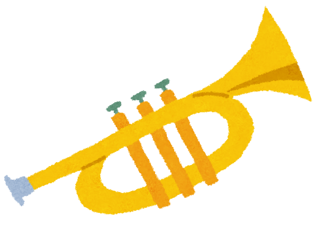
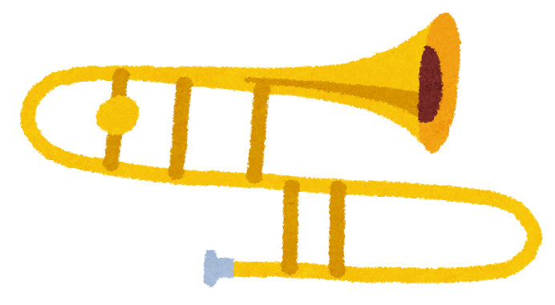
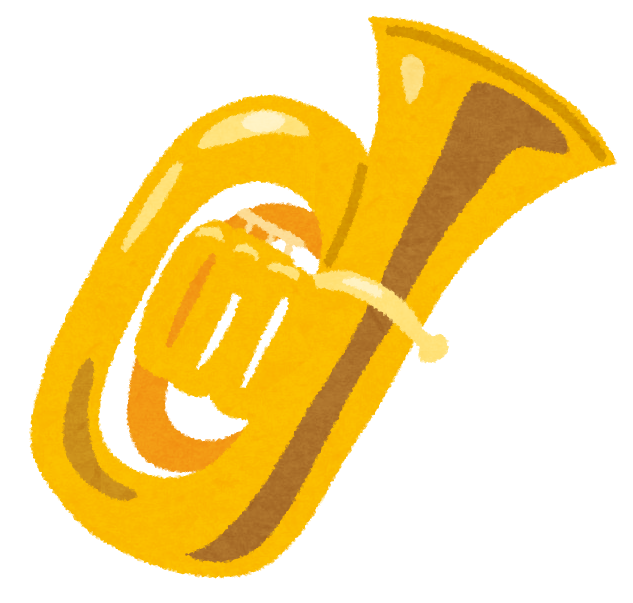
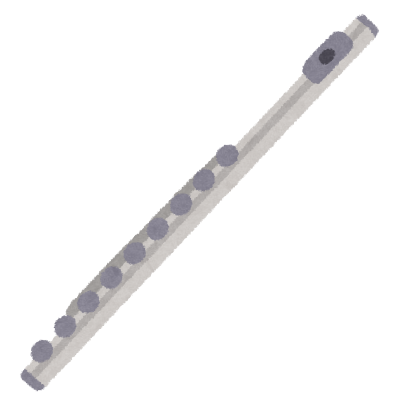
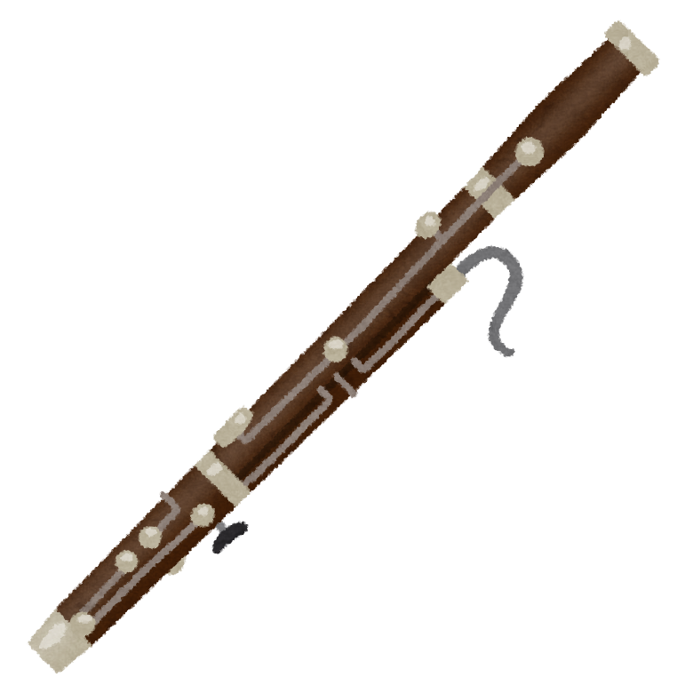
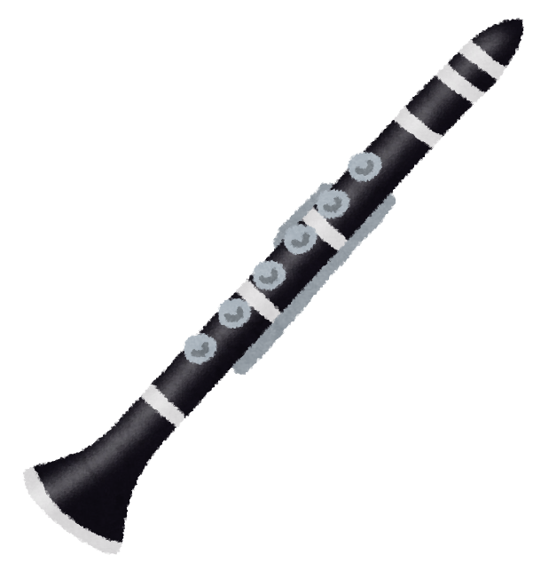

吹奏楽には’金管楽器’’木管楽器’’パーカッション’の楽器があります
金管楽器
金管楽器は唇を振動させることで音を出す楽器です
実はほら貝も金管楽器に入るんですよ
ホルン
”でんでんむし”や”かたつむり”という愛称で親しまれるホルン
ハーモニーや裏打ちを吹くことがおおいですがとても柔らかい華やかな音が出ます
たくさんの菅があり、一番長い時で５ｍの長さの菅を通って音が出るんです
ユーフォニアム
心地よい中低音が特徴のユーフォニアム
丸く柔らかい音色でソロやメロディーを奏でることも多い楽器です
なぜか名前が覚えてもらえないことが多いとか...
木管楽器
唇ではなくリードを振動させて音を出す楽器です
リコーダーも木管楽器に入ります
サックス
金管楽器と木管楽器の橋渡し役
１９世紀に入ってから発明された新しい楽器です
ソロやメロディーを奏でることも多く、ここぞというときにかっこよく決めてくれます
オーボエ
味わい深い独特な音色が特徴のオーボエ
ここぞ！というときにいい感じの雰囲気を醸し出してくれる楽器です
フランス語で高い音の木という意味らしいです
それぞれの楽器に様々な特徴があります
ここではよくつかわれる楽器についてみていきましょう
下にスクロールしてください
トランペット
とても知名度が高い楽器ですね
ソロやメロディーを奏でることも多く、とてもカッコいい楽器です
トランペットの原型は紀元前２０００年ぐらいにはできていたとか...
トロンボーン
トロンボーンは主に中低音を担当しています
スライドの長さを変えることで音を変えています
１８世紀にはいると協会などで使われることが多くなり”神の楽器”として扱われたそうです
チューバ
合奏の中では低音を担当しているチューバ
金管楽器の中で最も大きな楽器の一つです
実は国によって吹くときのスタイルが異なるんだとか...
フルート
華やかで明るい音色が魅力のフルート
吹奏楽では一番高い音を担当しています
息を直接吹き込んで音を鳴らすので意外と肺活量が必要な楽器です
ファゴット
とても広い音域が出せるファゴット
音量はそこまで大きくはありませんが温かみのある音色が特徴
実はめちゃくちゃ大人価格な楽器
クラリネット
軽快な音色から豊かな音色まで奏でられるクラリネット
楽器自体の温度変化に敏感で奏者は常に気を使っているようです
もともとは小型のトランペットという意味を持っていたみたいですよ
